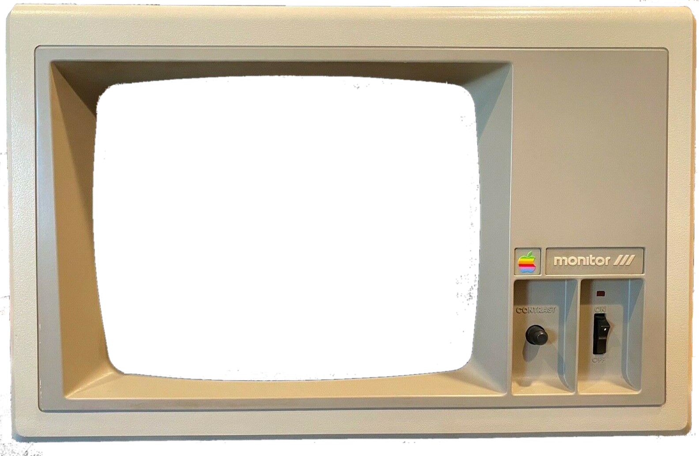

JavaScript Required
This site is a client-side DOS terminal and emulator suite.
It needs JavaScript to run.
Enable JavaScript and reload.
Exit Full Page
An Apple ][ Emulator in JavaScript

Disk 1
Disk 2
0 kHz
Loading...
Options
Save Disk
Save to Browser
Save Name:
Save
Download to Local Disk
Manage Local Saves
Load URL
Load Disk
$
Printer
Alert